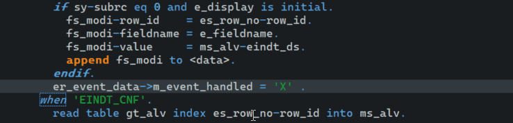

ABAP Quick Fixes - Change APPEND TO to APPEND VALUE #( ) TO
Using this quick fix, you can combine subsequent assignment of variables with APPEND statement at the end, to one single APPEND VALUE statement.
No selection of the whole block is required.
It's very useful in case of old ALV field-catalog preparation coding or for RANGES
